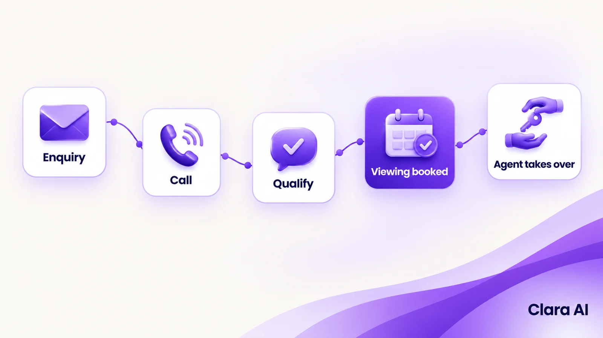
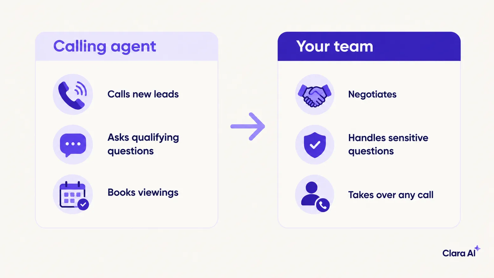
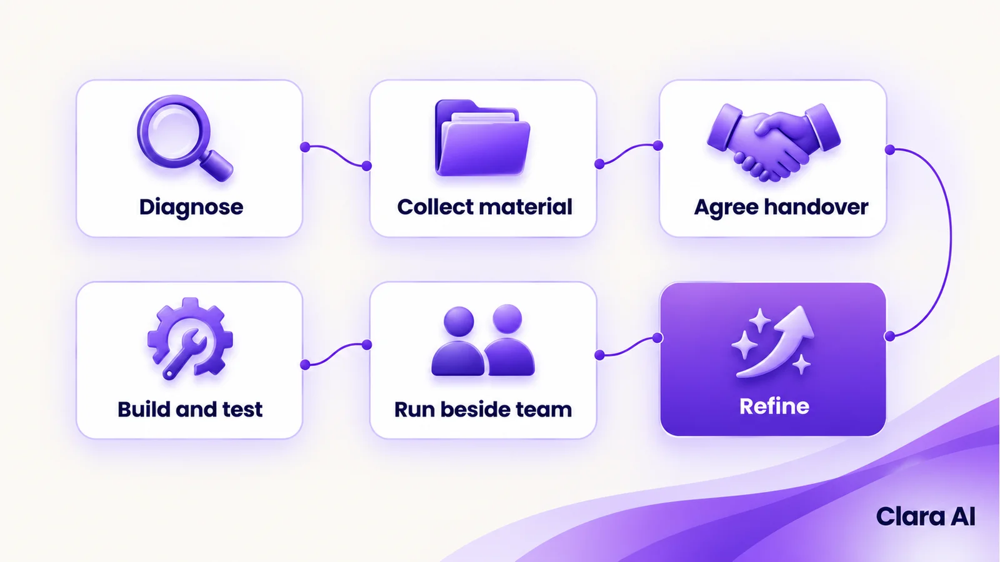

An AI calling agent for real estate lead follow-up phones every new enquiry within minutes, asks a few short questions about budget, area and timing, and books a viewing or passes the lead to an agent with notes. It works at any hour, and a human takes over for negotiation and anything sensitive.
It is 7:40 pm on a Friday. A buyer in Lisbon fills in an enquiry form for a two-bedroom flat, then opens three more listings. The agency's team left at six. The enquiry waits in the CRM until Monday at ten, when an agent rings a number that now goes to voicemail. By then the buyer has viewed two other flats.
Property enquiries arrive from portals, your website and social ads, and they arrive at all hours. Agents are out at viewings, so calls are returned in batches. The first call is also the one most likely to be missed. Portal leads often look the same in the CRM: a name, a number and a listing ID, with little else to help the agent prioritise.
Speed matters. A Harvard Business Review study of 1.25 million sales leads, published in 2011, found that firms responding within an hour were nearly seven times as likely to qualify a lead as firms responding an hour later. They were more than 60 times as likely as firms that waited 24 hours or longer. The study covered online leads across industries, not property specifically, so read it as direction, not a forecast.
Three problems repeat in most agencies:
It rings the buyer within minutes of the enquiry, in the buyer's language, and holds a short, structured conversation.

If nobody answers, it retries at times you agree, sends a message and marks the lead for a person. Missed-call rules are written with your team, so the agent does not flood a buyer who is in a meeting or already under offer.
The agent who starts on Monday finds a qualified lead with a viewing already in the diary.
Property is a large, personal decision. Many buyers want a voice for the first exchange, and many agencies already work by phone. A calling agent adds speed to a channel that buyers and agents already use.
Europe is not one market. Languages, calling hours and messaging habits differ from country to country. A buyer in Madrid may expect Spanish on the first ring. A buyer in Amsterdam may prefer English. Calling hours that feel polite in one city can feel late in another. So we lead with calls and add other channels where they suit your buyers.
An AI web chatbot on your listing pages helps the visitor who would rather type than talk. In the Nordics, web usually leads. A WhatsApp chatbot for business is a sensible optional second channel in countries where buyers already message agents on it.
Clara AI has built voice agents for two real estate developers in India. Hiranandani Parks uses a calling agent, and Rustomjee uses a presales voice agent. You can find our client work here.
We have no published results for either, so we do not quote any. Neither client is in Europe. The path from enquiry to viewing is similar, but languages, calling hours and consent rules differ. A European build therefore starts with its own diagnosis: your portals, your CRM, your scripts and the languages your buyers actually use.
The calling agent qualifies and books. Your people decide and negotiate.

The agent receives the lead with the call summary, so the buyer does not have to repeat anything. Your team also reviews call transcripts regularly. Where the agent stumbled, the script or the source information is corrected.
Recordings and transcripts hold personal data, so GDPR applies. In practice, the agent says at the start that it is an automated assistant and states why it is calling. It asks before recording, and data is kept only as long as needed. Access to recordings is limited to people who need them for the sale or for training. We agree these settings with you and your data-protection adviser before launch.
Calling is one door. A chatbot covers website visitors and messages, and both channels can write to the same lead record, so a buyer who types in the morning and takes a call in the evening is one person to your team.
An operations intelligence dashboard sits behind them. It can show how long each enquiry waited for a first call, how many leads were reached, how many viewings were booked, and which sources and offices follow up fastest. It tells you where follow-up breaks down, not only that it does.
You do not need all three on day one. Most agencies start with calling and add the rest once the first results are clear.
Clara AI builds, deploys and manages AI chatbots, AI calling agents and operations dashboards, for real estate teams and other businesses in India, the Gulf and Europe.
